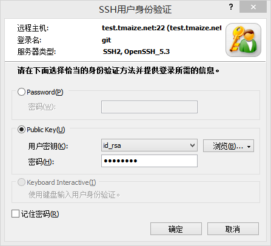
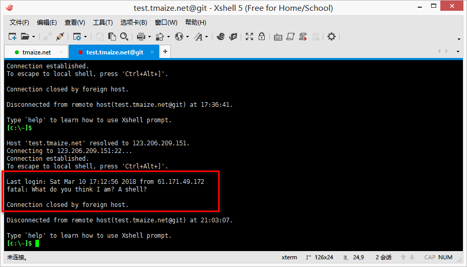
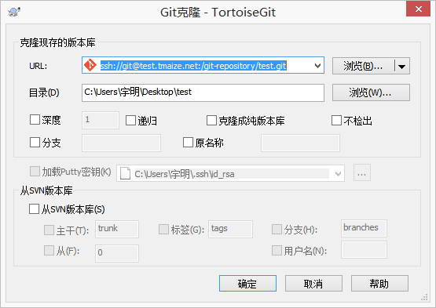

搭建git服务
#安装Git依赖
yum install curl-devel expat-devel gettext-devel openssl-devel zlib-devel perl-devel
#安装Git
yum install -y gityum install -y git
创建git用户
adduser git
一般为了安全会禁止git用户登陆系统
nano /etc/passwd
# 修改git用户的shell
# 设置为git-shell后，git用户可以正常通过ssh使用git，但无法登录shell，因为每次一登录就自动退出
git:x:502:504::/home/git:/usr/bin/git-shell
cd /home/git/
mkdir .ssh
touch .ssh/authorized_keys
# 生成公钥私钥
# 把私钥下载到自己电脑放到C:\Users\用户名\.ssh
# 把公钥的内容拷贝到authorized_keys（新加一行）
ssh-keygen -t rsa
使用Xshell测试一下

注意，如果提示：“所选的用户密钥未在远程主机上注册” ，搜了百度发现很多都说是：检查服务器的selinux及iptables是否开启，没有然和卵用，全是关的
后来看到说要把.ssh目录设置为700 ，公钥authorized_keys也是600的权限 就可以了
chmod 700 /home/git/.ssh
chmod 600 /home/git/.ssh/authorized_keys
# 顺便把ssh服务重启一下
/etc/init.d/sshd restart
由于设置了自动退出，使用Xshell登陆之后会自动退出，这里只是说明能够通过ssh连接到主机

创建git仓库
cd /
mkdir git-repository
cd git-repository/
# test.gits实际上是个文件夹，不显示项目文件的裸仓库
git init --bare test.git
然后本地克隆项目
地址为ssh://用户名@主机地址:git项目位置

创建Hook
目前服务端只是一个裸仓库，并不能看到项目的资源文件
可以通过hook，让每次项目push之后把某个分支自动checkout到某个目录(比如web目录)
/git-repository/test.git/hooks
touch post-receive
chmod +x post-receive
# 最好给下读写权限
chmod -R 777 /git-repository/
post-receive的内容
#!/bin/bash
# 注意/www.tmaize.net/test.tmaize.net/git/的权限
git --work-tree=/www.tmaize.net/test.tmaize.net/git/ checkout -f
然后本地push，至此即可完成自动化部署
对于其他语言，比如java需要编译之类的，可以通过在post-receive写复杂的脚本来实现